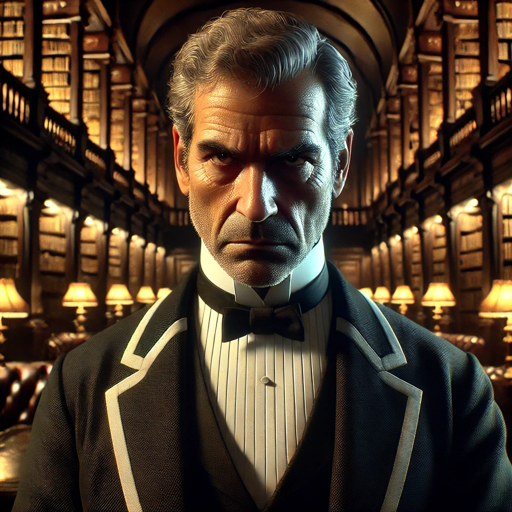

Rozhovor s Drummondem
Vy (detektiv Blackwood):
„Našel jsem jed ve sklepení. Lahvičky podepsané vaším jménem. Myslím, že přesně víte, o čem mluvím. Pomáhal jste při vraždě, že ano?“
Drummond:
(Obranně) „To je absurdní! Sir Henry mě požádal, abych ty chemikálie koupil pro jeho ‚výzkum‘. Já jen dělal, co mi řekl. Nemám s jeho smrtí nic společného!“